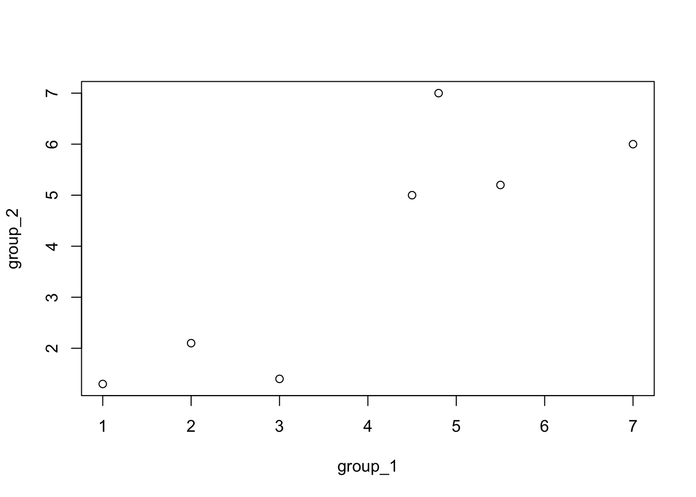
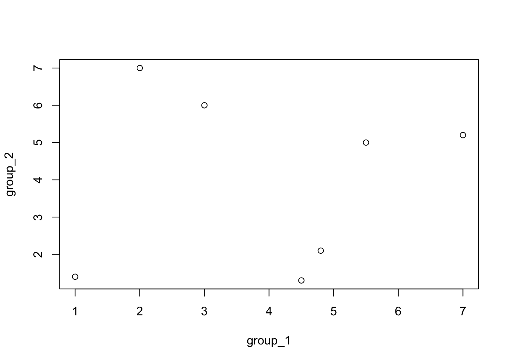
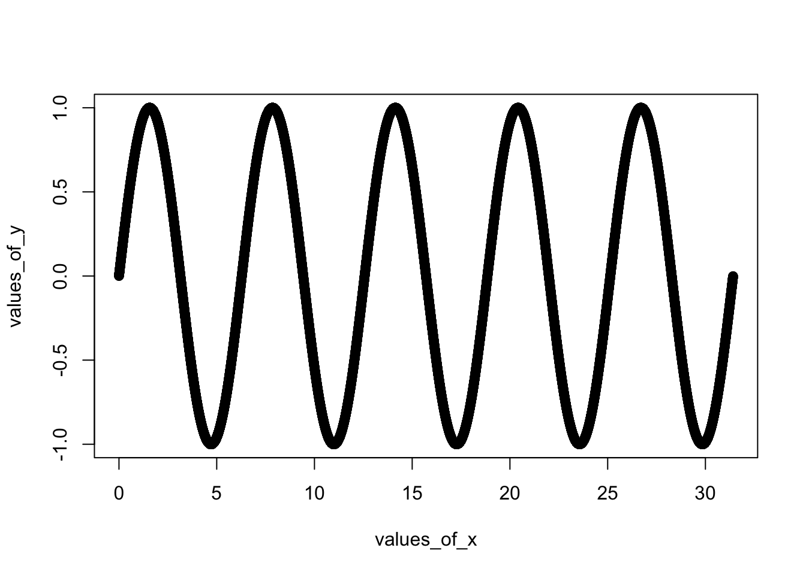
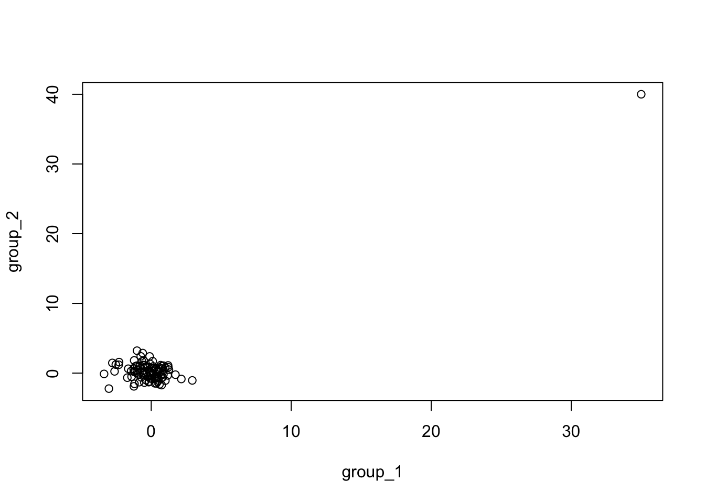
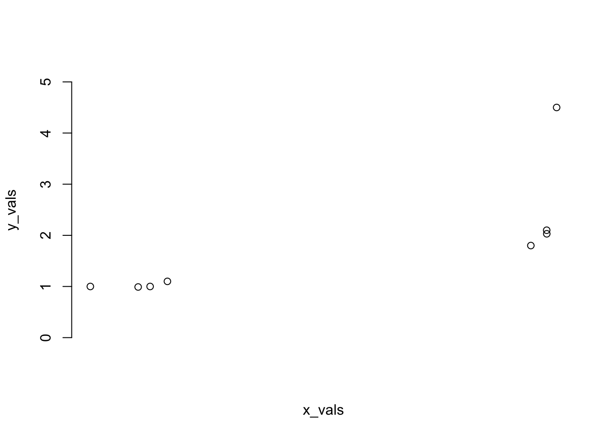
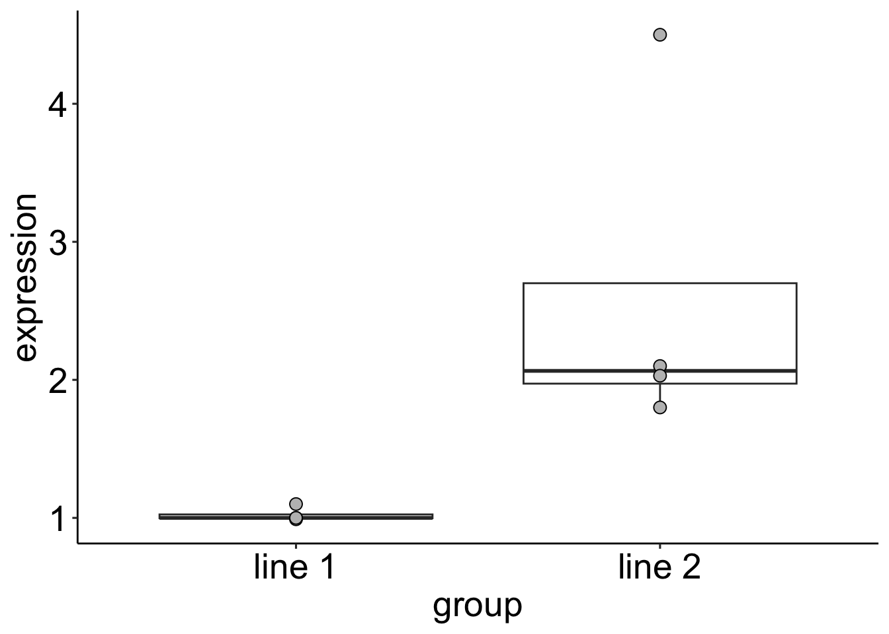

library(ggplot2)
library(ggpubr)Section 04
group_1=c(1,2,3,4.5,5.5,4.8,7)
group_2=c(1.3,2.1,1.4,5,5.2,7,6)
cor(group_1, group_2)[1] 0.8568035plot(group_1, group_2)
group_1=c(1,2,3,4.5,5.5,4.8,7)
group_2=c(1.4,7,6,1.3,5,2.1,5.2)
cor(group_1, group_2)[1] 0.06902028plot(group_1, group_2)
values_of_x=seq(from=0,to=pi*10,by=0.001)
values_of_y=sin(values_of_x)
plot(values_of_x, values_of_y)
cor(values_of_x, values_of_y)[1] -0.1559388group_1=rnorm(100)
group_2=rnorm(100)
group_1[101]=35
group_2[101]=40
plot(group_1,group_2)
cor(group_1,group_2)[1] 0.9107343cor(x=group_1, y=group_2, method = 'spearman')[1] -0.1690973cor.test(x=group_1, y=group_2, method = 'spearman')
Spearman's rank correlation rho
data: group_1 and group_2
S = 200734, p-value = 0.09094
alternative hypothesis: true rho is not equal to 0
sample estimates:
rho
-0.1690973 line_1=c(1.1,1,0.99,1)
line_2=c(2.1,1.8,4.5,2.03)
t.test(line_1,line_2)
Welch Two Sample t-test
data: line_1 and line_2
t = -2.4976, df = 3.01, p-value = 0.08761
alternative hypothesis: true difference in means is not equal to 0
95 percent confidence interval:
-3.6008041 0.4308041
sample estimates:
mean of x mean of y
1.0225 2.6075 wilcox.test(line_1,line_2) Warning in wilcox.test.default(line_1, line_2): cannot compute exact p-value
with ties
Wilcoxon rank sum test with continuity correction
data: line_1 and line_2
W = 0, p-value = 0.0294
alternative hypothesis: true location shift is not equal to 0#Code to plot the raw data
x_vals=jitter(c(1,1,1,1,2,2,2,2),0.5)
y_vals=c(line_1,line_2)
plot(x_vals,y_vals,axes=FALSE,ylim=c(0,5))
axis(2,0:5)
d = data.frame(
expression = c(line_1, line_2),
group = c(rep("line 1", 4), rep("line 2", 4))
)
ggplot(data = d, aes(y = expression, x = group)) +
geom_boxplot(outlier.shape = NA) +
geom_point(size = 3, shape = 21, color = "black", fill = "gray") +
theme_pubr() +
theme(text = element_text(size = 20))
pvals=c(0.99,0.92,0.82,0.99,0.52,0.96,0.82,0.36,0.92,0.51,0.69,0.89,0.27,0.19, 0.25,0.22,0.61,0.87,0.21,0.69,0.20,0.54,0.74,0.93,0.25,0.30,0.32,0.58,0.65, 70.84,0.51,0.60,0.63,0.01,0.16,0.57,0.82,0.90,0.05,0.73,0.80,0.25,0.81,0.0008, 0.001,0.53,0.47,0.95,0.39,0.27,0.98,0.77,0.38,0.69,0.47,0.63,0.12,0.63,0.48, 0.001,0.79,0.03,0.45,0.08,0.16,0.88,0.85,0.54,0.04,0.97,0.84,0.66,0.91,0.01, 0.43,0.50,0.89,0.66,0.25,0.49,0.67,0.74,0.87,0.64,0.79,0.67,0.31,0.61,0.36, 0.30,0.76,0.23,0.24,0.77,0.31,0.66,0.87,0.10,0.72,0.59)
pvals_adj = ifelse(pvals*length(pvals) <= 1, pvals*length(pvals), 1)
pvals_adj [1] 1.00 1.00 1.00 1.00 1.00 1.00 1.00 1.00 1.00 1.00 1.00 1.00 1.00 1.00 1.00
[16] 1.00 1.00 1.00 1.00 1.00 1.00 1.00 1.00 1.00 1.00 1.00 1.00 1.00 1.00 1.00
[31] 1.00 1.00 1.00 1.00 1.00 1.00 1.00 1.00 1.00 1.00 1.00 1.00 1.00 0.08 0.10
[46] 1.00 1.00 1.00 1.00 1.00 1.00 1.00 1.00 1.00 1.00 1.00 1.00 1.00 1.00 0.10
[61] 1.00 1.00 1.00 1.00 1.00 1.00 1.00 1.00 1.00 1.00 1.00 1.00 1.00 1.00 1.00
[76] 1.00 1.00 1.00 1.00 1.00 1.00 1.00 1.00 1.00 1.00 1.00 1.00 1.00 1.00 1.00
[91] 1.00 1.00 1.00 1.00 1.00 1.00 1.00 1.00 1.00 1.00pvals_adj = p.adjust(pvals, method = "bonferroni", n = length(pvals))
pvals_fdr = p.adjust(pvals, method = "fdr", n = length(pvals))
pvals_fdr[pvals_fdr <= 0.05][1] 0.03333333 0.03333333 0.03333333cell_line_data=matrix(c(11,1,3,4),nrow=2,ncol=2)
dimnames(cell_line_data)[[1]]=c("type_1","type_2")
dimnames(cell_line_data)[[2]]=c("mutant","notmutant")
cell_line_data mutant notmutant
type_1 11 3
type_2 1 4